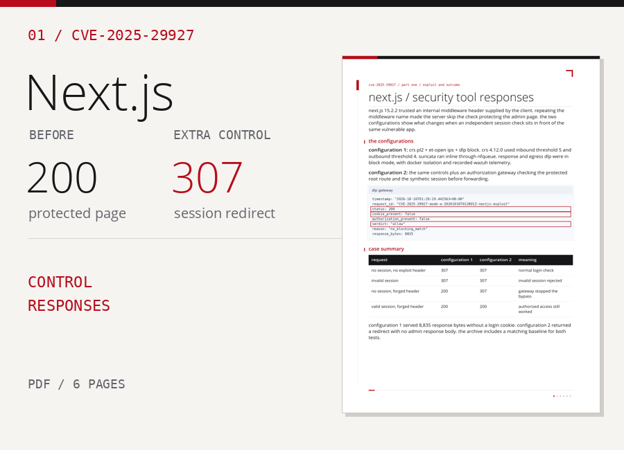
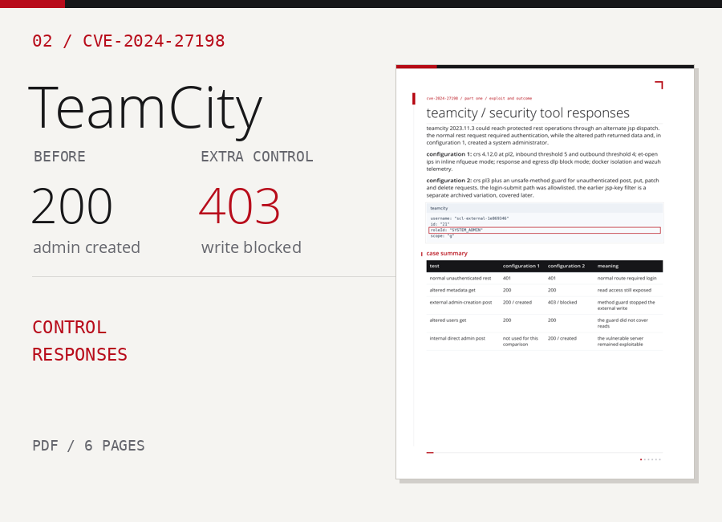
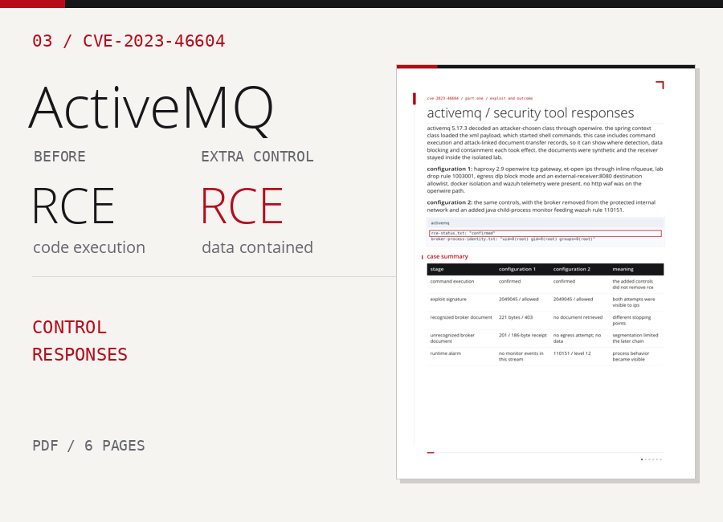
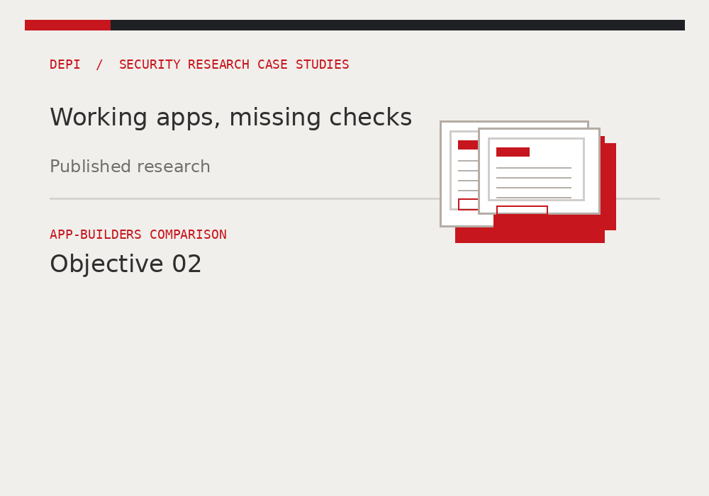

CVE-2025-29927
An independent session check redirected the middleware bypass.
Three CVEs tested in Docker labs. We compared what the controls detected, what they blocked, and what still worked.
Manual captures and control experiments


An independent session check redirected the middleware bypass.


The method guard blocked the external write. Bypassed reads remained open.

Code execution still worked. Segmentation limited access to protected documents.
Capture → PDF page → original record

13 captures · source-page links · archive excerpts

14 captures · source-page links · archive excerpts

12 captures · source-page links · archive excerpts
An alert does not prove prevention.
| Case | Before the extra control | With the extra control |
|---|---|---|
| Next.js | Forged header returned the protected page without a session.200 | Independent session check redirected the bypass.307 |
| TeamCity | An unauthenticated request created a synthetic administrator.200 | External write blocked; bypassed reads remained open.403 / writes 200 / reads |
| ActiveMQ | Code execution succeeded. An unrecognized 186-byte document reached the receiver. | Code execution still succeeded. Segmentation made protected documents unavailable; runtime monitoring raised an alert. |

A review of ownership checks, payment state, platform authentication and database settings in AI-built apps, visual builders, shared components and generated Android apps.
The cases do not establish that AI caused every weakness or rank builders against human developers.
Read the research 10 pages ↗Original publication dates
Disclosure timeline and explanation of the middleware trust boundary.
Vendor postmortemAffected versions, initial fixed release and vendor response.
Vendor advisoryObserved customer-environment activity and attempted ransomware deployment.
Incident researchResearcher disclosure of database access and unauthorized modification.
Original researchDocker Compose source, control policies, test scripts and evidence helpers.
Open the lab guide ↗Published disclosures and studies behind the app-builder review.
View the source index ↗Historical records supplied with the three CVE lab experiments.
Open the log file ↗